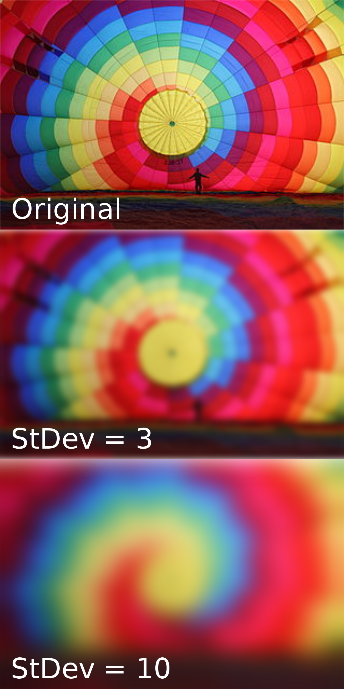

Chapter 2: Algorithm Discovery and Design
Chapter 3: The Efficiency of Algorithms
Student: Daniel Ponce
Chapter 2: Algorithms
- Explain why natural language is not an effective tool for describing algorithms.
- Problem: 1
A student has three grades; the final grade is the average of the three. List the algorithmic steps to find the final grade. - Problem: 2
A car owner recorded the car's previous car mileage, current mileage, and the number of gallos of gas the owner filled their tank with. List the algorithmic steps to find the car's mpg (miles per gallon).
Natural language can be extremely verbose, causing the reulting algorithms to be rambling, unstructured and hard to follow.
Natural language gives room for interpretation. Different readers may interpret the same sentence in totally differnet ways
1. Add all grades
2. Divide by 3
3. Print result
1. Divide miles traveled by gallons of gas that took to refill.
Chapter 2: Briefly define
- Natural Language: the language we speak and write in our everyday lives.
- Pseudocode: Plain language description fo the steps in an algorithm or another system.
- sequential operation (straight line algorithm): the sequential execution of operations one after another.
- input: Get a value
- output: Print a value
- conditional statement: They allow an algorithm to ask a yes/no question and select the next operation to perform on the basis of the answer to that question.
- boolean statement: an expression that evaluates to either true or false .
- algorithmic discovery process: Finding the solution to a given problem
Briefly describe or define:
- Why algorithms should be correct: Algorithms that give wrong results lead to mistakes that are expensive and/or fatal.
- Why algorithms should be efficient: As computer memory capacity and processing speed increase, people find more complex problems to be solved, so the boundaries of the computer's resources continue to be pushed.
- program maintenance: Modifying a program, either to correct errors or to expand its functionality.
- Importance of algorithm: ease of understanding: The program being maintained should be easy to understand.
- algorithmic elegance: is equivalent to style. A program with elegance can be more difficult to undertand
- sequential search algorithm: Searching a list of items to locate a particular item.
- order of magnitude: Anything that varies as a constant times n
- selection sort: selects the smallest (or largest) element from the unsorted portion of the list and moving it to the sorted portion of the list.
- flop: compares performance among different makes of computers by testing how many arithmetic operations one can do in 1 second.
- teraflop: 1 trillion flops
- petaflop: 1 quadrillion flops
- parallel processor: a method in computing of running two or more processors to handle separate parts of an overall task.
- data cleanup problem : removes incorrect, corrupted, incorrectly formatted, duplicate, or incomplete data.
- binary search
- pattern matching
Carl Friedrich Gauss
- Carl Friedrich Gauss worked in a wide variety of fields in both mathematics and physics incuding number theory, analysis, differential geometry, geodesy, magnetism, astronomy and optics. His work has had an immense influence in many areas.
- Gauss recognized he had fifty pairs of numbers when he added the first and last number in the series, the second and second-last number in the series, and so on.
- Gaussian optics is a technique in geometrical optics that describes the behaviour of light rays in optical systems by using the paraxial approximation, in which only rays which make small angles with the optical axis of the system are considered.
- It is a widely used effect in graphics software, typically to reduce image noise and reduce detail. The visual effect of this blurring technique is a smooth blur resembling that of viewing the image through a translucent screen
